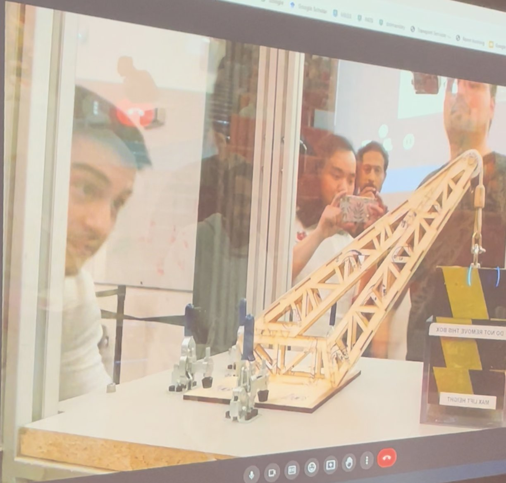
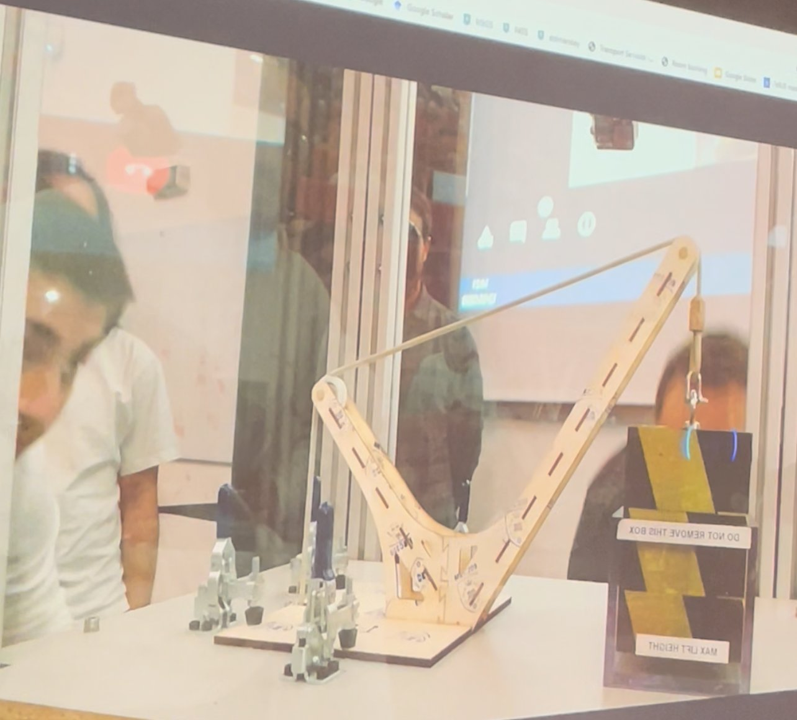
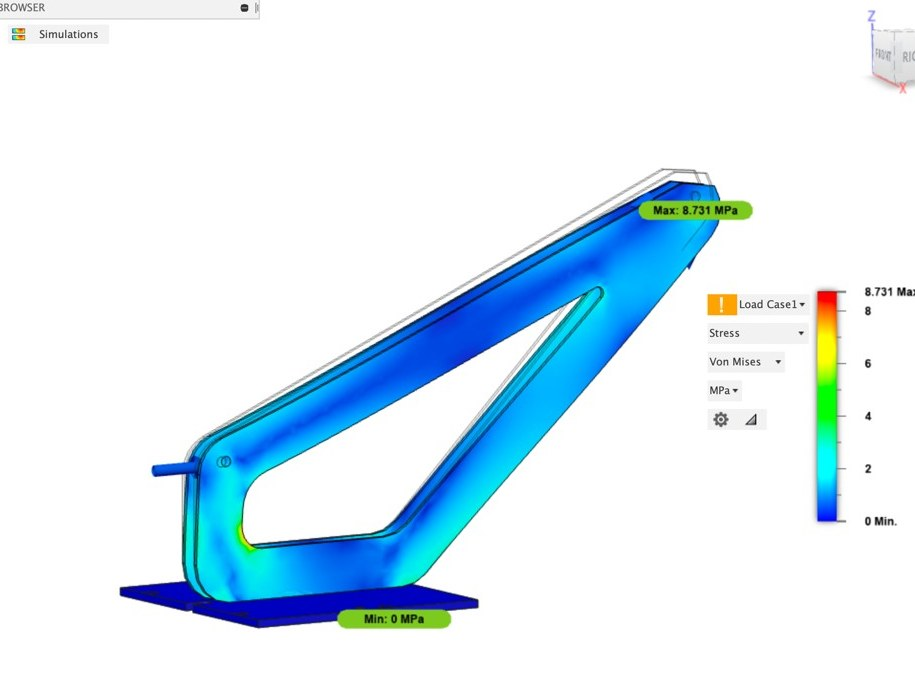
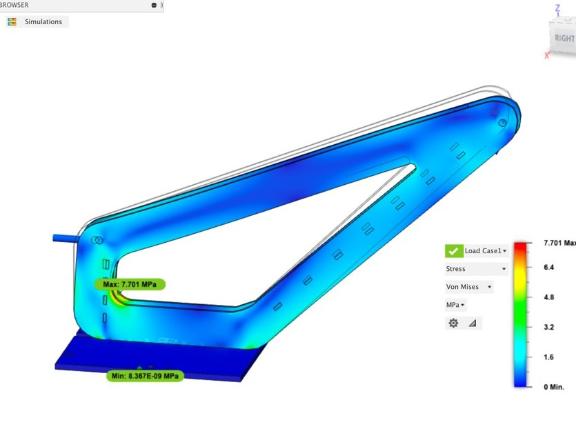
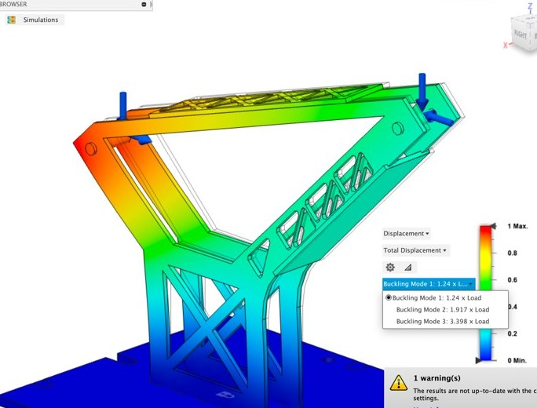
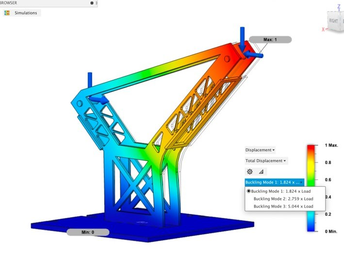

The brief
- Lift an 18 kg mass at least 10 mm and hold it for 5 seconds, using a hand winch and a cable over two pulleys.
- The mass must hang at least 150 mm beyond the base plate, so the structure has to reach out like a crane.
- Only 3 mm poplar plywood (cut from a single 400 × 300 mm sheet) and PVA glue.
- Scored on weight: the lightest working structure in the year group sets the benchmark, so every gram counts.
My role: Structures Lead
I designed the structure of both of our team's cranes. They were deliberately different approaches to the same weight-versus-risk trade-off.
Two designs, live tested


Test day
Result: both cranes lifted the 18 kg mass easily, with no fractures or buckling. Our lightweight design finished 3rd out of 42 teams for the lightest structure to succeed.
My individual FEA study
Alongside the group build, I designed and optimised my own safe and risky cranes in Fusion 360. I used plywood properties from our own tensile tests (24.9 MPa strength along the grain) and checked both static stress and buckling.
- Buckling, not stress, was the real limit. My first safe design had a healthy stress safety factor (2.9), but it would have buckled at just 0.28× the load. Adding interlocking cross-supports between the two side panels raised the first buckling mode to 4.5×, for a final safety factor of 3.4 at 129 g.
- Risky design optimised step by step:
- The initial design, at 65 g, would buckle at 0.81× the load.
- Adding support plates raised this to 1.24×.
- The stress plots showed the top plate was barely loaded, so I moved it to the short arm. That shifted the deflection to the front pulley and raised buckling to 1.82×, giving a final weight of 54 g and a safety factor of 1.8.
- Results checked for accuracy: mesh convergence came in under the 3% tolerance for both designs.




What I'd take into my next project
- Check buckling, not just stress. Thin, light structures fail by buckling long before the material yields. A design that looks safe on a stress plot can still collapse.
- Use the stress results to remove material. Low-stress regions show where weight can come out, or where a stiffener does more good somewhere else.
- Respect the material. Plywood is much stronger along the grain and varies from sheet to sheet, so grain direction and safety margin are real design choices.